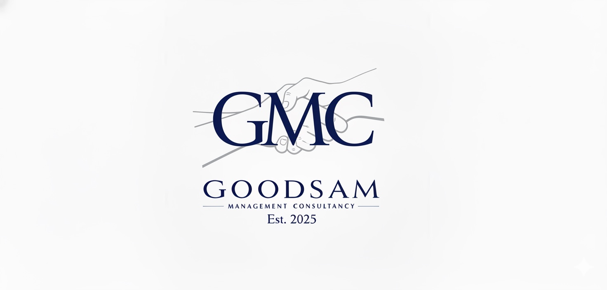
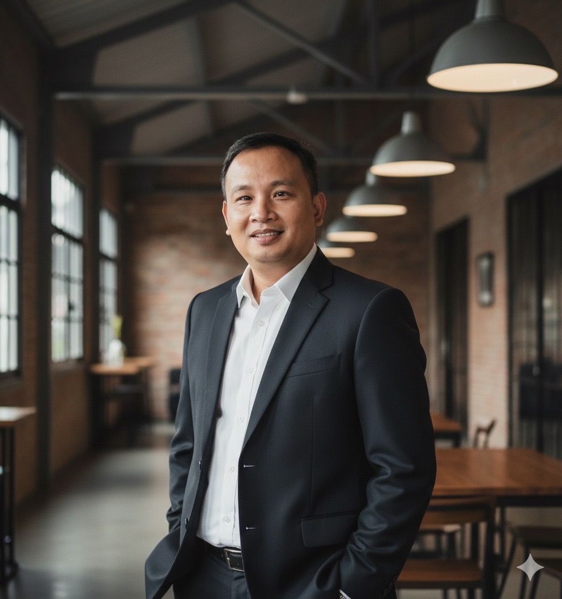

Goodsam Management Consultancy partners with startups and scaling organizations to bring structure, clarity, and confidence across finance, operations, and human resources. Our approach is grounded in integrity, stewardship, and practical leadership.
Start a Conversation Explore Our ServicesGoodsam Management Consultancy is a trusted advisory firm supporting startups and growing businesses during pivotal stages of their journey. Inspired by the biblical story of the Good Samaritan, we step in with practical expertise and genuine care—helping leaders address immediate challenges while building foundations for long-term success.
Finance & Accounting Advisor specializing in financial strategy, systems, and controls for startups and growing organizations. Jelyn brings clarity and structure to complex financial challenges, helping founders make confident, data-driven decisions.

Operations & Human Resources Advisor with deep experience in operational efficiency, people strategy, and scalable organizational design. Jowell supports leaders in building resilient teams and sustainable operating models.
Strategic financial leadership for growing businesses, including budgeting, forecasting, cash flow management, internal controls, and management reporting—designed to support sound decision making and investor readiness.
End-to-end operational support covering process optimization, system implementation, and scalable operating models that allow organizations to grow with structure and efficiency.
Practical HR solutions including policy development, compensation frameworks, performance management, and people strategy—aligned with both compliance requirements and company culture.
“But a Samaritan, as he traveled, came where the man was; and when he saw him, he took pity on him.”
— Luke 10:33
Whether you are launching, scaling, or navigating operational complexity, we are here to help. Contact us below and we will be in touch.
Email: jelyncerbolles@me.com
Mobile Number:+639175677070 and +639178167070
Service Model: Remote consulting | Serving Globally